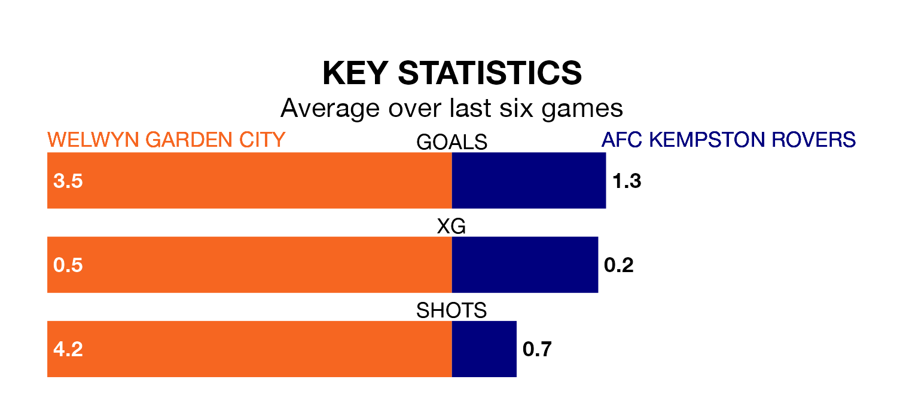

Struggling AFC Kempston Rovers face Welwyn Garden City away on Tuesday looking to build on a win in their last league outing.
After securing all three points with a 4-2 victory over Ware on Saturday, Kempston Rovers sit bottom of Southern League Division One Central.
They travel to play a Welwyn Garden side 13th in the standings, who lost in their last match, 4-3 against Thame United.
With 18 goals in 17 games so far this season, Kempston Rovers are the league's lowest scorers with 1.1 goals per game. And they are conceding more than average, letting in 40 goals at a rate of 2.4 per game.
Welwyn Garden, meanwhile, are above average scorers, with 2.3 goals per game, compared to a league average of 1.8. They have conceded 2.2 goals per game.
City are in reasonable form in Southern League Division One Central, with four wins and two losses from their last six games.
With a win and a draw over that period, the away team's form is much worse – they have taken four points from 18, compared to the hosts' 12.
In the last five years, Welwyn Garden and Kempston Rovers have played each other on five occasions. Welwyn Garden won three of them, Kempston Rovers one, and they drew once.
On average, Welwyn Garden scored 2.4 goals and Kempston Rovers 1.6 in those matches.
Their last meeting was on December 6 2022, when Welwyn Garden won 3-1 at home.
Updated: 14:53 (UTC), 16/01/24